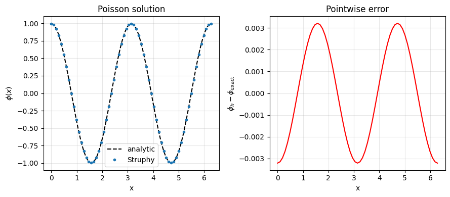
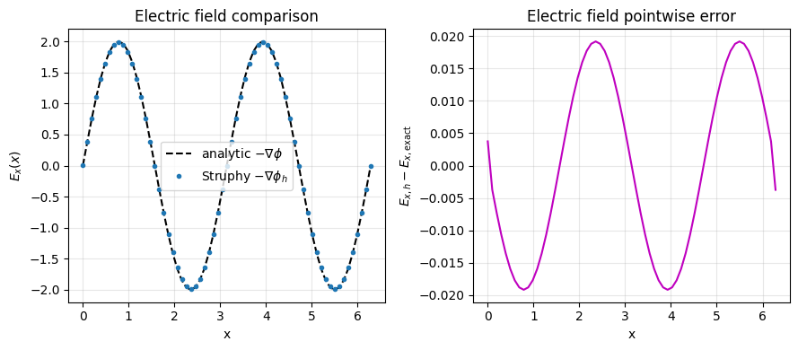
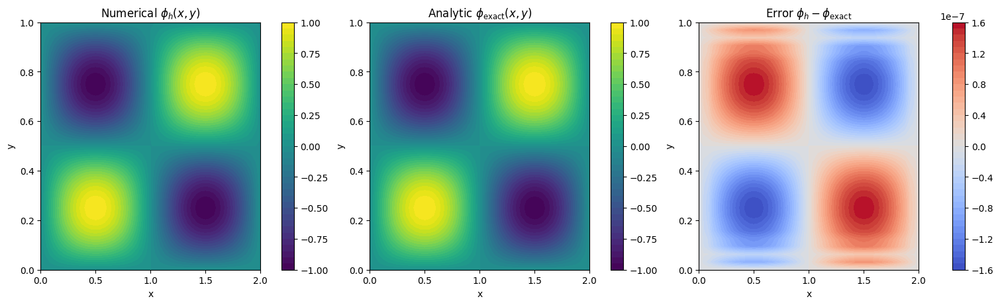
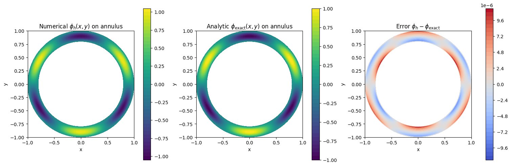
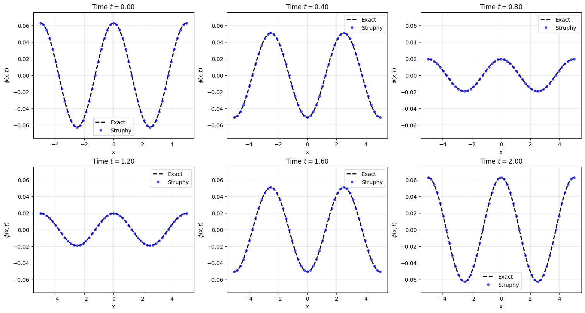
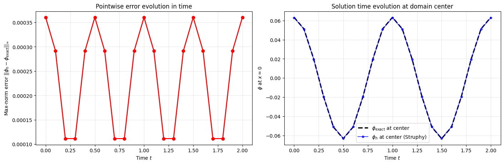

Solving the Poisson equation#
Overview#
The Poisson equation is a fundamental elliptic partial differential equation that appears throughout physics and engineering:
Electrostatics (Coulomb’s law)
Magnetostatics
Gravitational potential
Fluid dynamics (pressure Poisson equation)
And many coupled multiphysics systems
This tutorial demonstrates how to solve various manufactured Poisson problems using Struphy’s Poisson model, with verification against analytical solutions.
Solving 1D Poisson with periodic boundary conditions#
We begin with the simplest case: a 1D periodic Poisson problem. The model solves the stabilized equation:
where:
\(\phi(x)\) is the potential
\(\rho(x)\) is the source (charge/forcing)
\(\varepsilon\) is a small stabilization parameter (needed for uniqueness in periodic domains)
For a manufactured test, we choose the analytical solution:
where \(kx\) is the wavenumber. This determines the required source as:
We solve on a periodic domain \(x \in [0, L)\), run a Struphy Simulation, and compare numerical and exact solutions.
[1]:
import numpy as np
import matplotlib.pyplot as plt
from struphy import Simulation, DerhamOptions, domains, grids, perturbations
from struphy.initial.base import GenericPerturbation
from struphy.models import Poisson
Poisson.pde()
PDEs solved by model:
Find φ ∈ H¹ such that
-∇ · D₀(𝐱) ∇ φ + n₀(𝐱) φ = ρ(t, 𝐱)
where n₀, ρ(t) : Ω → ℝ are real-valued functions, ρ(t) is parametrized by time t, and D₀ : Ω → ℝ3 × 3 is a positive matrix.
Boundary terms from integration by parts are assumed to vanish.
[2]:
# Manufactured periodic test case in 1D (aligned with verification test pattern)
Lx = 2.0 * np.pi
mode = 2
k = mode * 2.0 * np.pi / Lx
# Tiny stabilization makes the periodic problem uniquely solvable
stab_eps = 1e-8
# Build the source through the model variable as in test_verif_Poisson.py
model = Poisson()
model.propagators.poisson.options = model.propagators.poisson.Options(
stab_eps=stab_eps,
)
source_amp = k**2 + stab_eps
model.em_fields.source.add_perturbation(
perturbations.ModesCos(ls=(mode,), amps=(source_amp,))
)
phi_exact = lambda e1, e2, e3: np.cos(k * e1)
Setting up the 1D periodic case#
To run a Poisson solve in Struphy, we need to:
Create a model with the appropriate equation parameters
Define a manufactured source that will be used as the right-hand side
Specify solver options (stabilization, numerical parameters)
Create a simulation with domain, grid, and solver settings
Execute the solve and post-process results
Below, Poisson.Options controls the elliptic solve. We specify:
stab_eps: a tiny stabilization to remove the constant null-space in the periodic case
The source term (rho) is wired up automatically when the Poisson model is constructed (it passes em_fields.source to the propagator internally). All other option fields use defaults (solver choice, preconditioner, tolerances, etc.).
[3]:
# 1D periodic setup: periodic bcs are the default (None in each direction)
domain = domains.Cuboid(l1=0.0, r1=Lx)
grid = grids.TensorProductGrid(num_elements=(64, 1, 1))
derham_opts = DerhamOptions()
sim = Simulation(
model=model,
domain=domain,
grid=grid,
derham_opts=derham_opts,
)
# For a stationary Poisson solve, one step is enough
sim.run(one_time_step=True)
sim.pproc()
sim.load_plotting_data()
Starting run for model Poisson ...
WARNING: Class "BasisProjectionOperators" called with degree=(1, 1, 1) (interpolation of piece-wise constants should be avoided).
Time stepping: 100%|██████████| 1/1 [00:00<00:00, 135.23step/s]
Struphy run finished.
Post-processing path /home/runner/work/struphy/struphy/doc/_collections/tutorials/sim_1
Reading hdf5 data of following species:
em_fields:
phi: <HDF5 dataset "phi": shape (2, 66, 3, 3), type "<f8">
source: <HDF5 dataset "source": shape (2, 66, 3, 3), type "<f8">
100%|██████████| 2/2 [00:00<00:00, 1275.25it/s]
Creation of Struphy Fields done.
Evaluating fields ...
100%|██████████| 2/2 [00:00<00:00, 1461.43it/s]
Creating vtk in /home/runner/work/struphy/struphy/doc/_collections/tutorials/sim_1/post_processing/fields_data ...
100%|██████████| 2/2 [00:00<00:00, 1654.23it/s]
No kinetic data found in hdf5 file, skipping post-processing of kinetic data.
Loading post-processed plotting data:
Data path: /home/runner/work/struphy/struphy/doc/_collections/tutorials/sim_1/post_processing
The following data has been loaded:
grids:
self.t_grid.shape =(2,)
self.grids_log[0].shape =(65,)
self.grids_log[1].shape =(2,)
self.grids_log[2].shape =(2,)
self.grids_phy[0].shape =(65, 2, 2)
self.grids_phy[1].shape =(65, 2, 2)
self.grids_phy[2].shape =(65, 2, 2)
self.spline_values:
em_fields
phi_log
source_log
self.orbits:
self.f:
self.n_sph:
[4]:
# Extract 1D line data and compare to analytic solution
x = sim.grids_phy[0][:, 0, 0]
t_last = max(sim.spline_values.em_fields.phi_log.data.keys())
phi_num = sim.spline_values.em_fields.phi_log.data[t_last][0][:, 0, 0]
phi_ref = phi_exact(x, 0.0, 0.0)
err = phi_num - phi_ref
err_max = np.max(np.abs(err))
plt.figure(figsize=(9, 4))
plt.subplot(1, 2, 1)
plt.plot(x, phi_ref, "k--", label="analytic")
plt.plot(x, phi_num, "o", ms=3, label="Struphy")
plt.xlabel("x")
plt.ylabel(r"$\phi(x)$")
plt.title("Poisson solution")
plt.legend()
plt.grid(alpha=0.3)
plt.subplot(1, 2, 2)
plt.plot(x, err, "r", lw=1.5)
plt.xlabel("x")
plt.ylabel(r"$\phi_h - \phi_\mathrm{exact}$")
plt.title("Pointwise error")
plt.grid(alpha=0.3)
plt.tight_layout()
print(f"max-norm error ||phi_h - phi_exact||_inf = {err_max:.3e}")
# Electric field comparison: E = -grad(phi)
E_num = -np.gradient(phi_num, x, edge_order=2)
E_ref = k * np.sin(k * x)
E_err = E_num - E_ref
E_err_max = np.max(np.abs(E_err))
plt.figure(figsize=(9, 4))
plt.subplot(1, 2, 1)
plt.plot(x, E_ref, "k--", label=r"analytic $-\nabla\phi$")
plt.plot(x, E_num, "o", ms=3, label=r"Struphy $-\nabla\phi_h$")
plt.xlabel("x")
plt.ylabel(r"$E_x(x)$")
plt.title("Electric field comparison")
plt.legend()
plt.grid(alpha=0.3)
plt.subplot(1, 2, 2)
plt.plot(x, E_err, "m", lw=1.5)
plt.xlabel("x")
plt.ylabel(r"$E_{x,h} - E_{x,\mathrm{exact}}$")
plt.title("Electric field pointwise error")
plt.grid(alpha=0.3)
plt.tight_layout()
print(f"max-norm error ||E_h - E_exact||_inf = {E_err_max:.3e}")
max-norm error ||phi_h - phi_exact||_inf = 3.207e-03
max-norm error ||E_h - E_exact||_inf = 1.920e-02


2D Manufactured Test on a Rectangle#
We now solve a 2D Poisson problem on a rectangular domain with different side lengths. This tests:
Multi-dimensional elliptic solves
Non-square domains
Homogeneous Dirichlet (zero) boundary conditions
The rectangular domain is:
We choose a separable manufactured solution that vanishes on all four boundaries:
For the Poisson equation \(-\Delta\phi + \varepsilon\phi = \rho\), the required manufactured source is:
Unlike the periodic case, we now enforce Dirichlet boundary conditions (\(\phi = 0\) on all boundaries). The solution is unique without any stabilization (\(\varepsilon\) can be very small).
We construct this 2D test through model perturbations (ModesSinSin) and compare solution fields at select points using contour plots.
[5]:
# 2D manufactured Poisson setup and solve
Lx2 = 2.0
Ly2 = 1.0
eps2 = 1e-8
kx2 = 2.0 * np.pi / Lx2
ky2 = 2.0 * np.pi / Ly2
phi2_exact = lambda e1, e2, e3: np.sin(kx2 * e1) * np.sin(ky2 * e2)
model2 = Poisson()
model2.propagators.poisson.options = model2.propagators.poisson.Options(
stab_eps=eps2,
)
source_amp2 = kx2**2 + ky2**2 + eps2
model2.em_fields.source.add_perturbation(
perturbations.ModesSinSin(ls=(1,), ms=(1,), amps=(source_amp2,))
)
domain2 = domains.Cuboid(l1=0.0, r1=Lx2, l2=0.0, r2=Ly2)
grid2 = grids.TensorProductGrid(num_elements=(48, 32, 1))
derham_opts2 = DerhamOptions(
degree=(3, 3, 1),
bcs=(("dirichlet", "dirichlet"), ("dirichlet", "dirichlet"), None),
)
sim2 = Simulation(
model=model2,
domain=domain2,
grid=grid2,
derham_opts=derham_opts2,
)
sim2.run(one_time_step=True)
sim2.pproc()
sim2.load_plotting_data()
Starting run for model Poisson ...
Time stepping: 100%|██████████| 1/1 [00:00<00:00, 89.81step/s]
Struphy run finished.
Post-processing path /home/runner/work/struphy/struphy/doc/_collections/tutorials/sim_1
Reading hdf5 data of following species:
em_fields:
phi: <HDF5 dataset "phi": shape (2, 57, 41, 3), type "<f8">
source: <HDF5 dataset "source": shape (2, 57, 41, 3), type "<f8">
100%|██████████| 2/2 [00:00<00:00, 1138.36it/s]
Creation of Struphy Fields done.
Evaluating fields ...
100%|██████████| 2/2 [00:00<00:00, 274.72it/s]
Creating vtk in /home/runner/work/struphy/struphy/doc/_collections/tutorials/sim_1/post_processing/fields_data ...
100%|██████████| 2/2 [00:00<00:00, 302.10it/s]
No kinetic data found in hdf5 file, skipping post-processing of kinetic data.
Loading post-processed plotting data:
Data path: /home/runner/work/struphy/struphy/doc/_collections/tutorials/sim_1/post_processing
The following data has been loaded:
grids:
self.t_grid.shape =(2,)
self.grids_log[0].shape =(49,)
self.grids_log[1].shape =(33,)
self.grids_log[2].shape =(2,)
self.grids_phy[0].shape =(49, 33, 2)
self.grids_phy[1].shape =(49, 33, 2)
self.grids_phy[2].shape =(49, 33, 2)
self.spline_values:
em_fields
phi_log
source_log
self.orbits:
self.f:
self.n_sph:
[6]:
# 2D diagnostics and plots
t2_last = max(sim2.spline_values.em_fields.phi_log.data.keys())
X = sim2.grids_phy[0][:, :, 0]
Y = sim2.grids_phy[1][:, :, 0]
phi2_num = sim2.spline_values.em_fields.phi_log.data[t2_last][0][:, :, 0]
phi2_ref = phi2_exact(X, Y, 0.0)
err2 = phi2_num - phi2_ref
err2_max = np.max(np.abs(err2))
fig, axs = plt.subplots(1, 3, figsize=(15, 4.5), constrained_layout=True)
im0 = axs[0].contourf(X, Y, phi2_num, levels=40, cmap="viridis")
axs[0].set_title("Numerical $\\phi_h(x,y)$")
axs[0].set_xlabel("x")
axs[0].set_ylabel("y")
plt.colorbar(im0, ax=axs[0])
im1 = axs[1].contourf(X, Y, phi2_ref, levels=40, cmap="viridis")
axs[1].set_title("Analytic $\\phi_{\\mathrm{exact}}(x,y)$")
axs[1].set_xlabel("x")
axs[1].set_ylabel("y")
plt.colorbar(im1, ax=axs[1])
im2 = axs[2].contourf(X, Y, err2, levels=40, cmap="coolwarm")
axs[2].set_title("Error $\\phi_h-\\phi_{\\mathrm{exact}}$")
axs[2].set_xlabel("x")
axs[2].set_ylabel("y")
plt.colorbar(im2, ax=axs[2])
print(f"2D max-norm error ||phi_h - phi_exact||_inf = {err2_max:.3e}")
2D max-norm error ||phi_h - phi_exact||_inf = 1.589e-07

2D Manufactured Test on a Thin Annulus (Polar Coordinates)#
As a second 2D geometry test, we solve Poisson on a thin annulus (a disc-shaped domain with a small hole). This demonstrates:
Non-Cartesian geometries (polar coordinates via conformal mapping)
Dirichlet boundary conditions at both inner and outer radii
Manufactured solutions expressed in polar coordinates
The geometry is a thin annulus with radii \(a_1 < r < a_2\). We use the manufactured solution in polar coordinates \((r, \theta)\):
where \(m\) is an azimuthal mode number. This solution automatically satisfies:
Inner boundary (\(r=a_1\)): \(\phi = 0\) (since \(\sin(0) = 0\))
Outer boundary (\(r=a_2\)): \(\phi = 0\) (since \(\sin(\pi) = 0\))
The source term \(\rho\) is computed analytically in polar coordinates, accounting for the Laplacian in polar form:
This manufactured solution is injected via a GenericPerturbation directly in physical space. Plots are shown in physical \((x,y)\) coordinates for visualization.
[7]:
# HollowCylinder manufactured annulus test (physical-space definition)
a1 = 0.8
a2 = 1.0
Lz3 = 1.0
m3 = 3
eps3 = 1e-8
w3 = a2 - a1
alpha3 = np.pi / w3
def phi3_exact(x, y, z):
r = np.sqrt(x**2 + y**2)
theta = np.arctan2(y, x)
s = alpha3 * (r - a1)
return np.sin(s) * np.sin(m3 * theta)
def rho3_exact(x, y, z):
r = np.sqrt(x**2 + y**2)
theta = np.arctan2(y, x)
s = alpha3 * (r - a1)
sin_s = np.sin(s)
cos_s = np.cos(s)
sin_mt = np.sin(m3 * theta)
# -Delta(phi) + eps*phi for phi(r,theta)=sin(s)sin(m theta)
term = (alpha3**2) * sin_s - (alpha3 / r) * cos_s + (m3**2 / r**2) * sin_s + eps3 * sin_s
return term * sin_mt
model3 = Poisson()
model3.propagators.poisson.options = model3.propagators.poisson.Options(
stab_eps=eps3,
)
model3.em_fields.source.add_perturbation(
GenericPerturbation(rho3_exact, given_in_basis="physical")
)
domain3 = domains.HollowCylinder(a1=a1, a2=a2, Lz=Lz3)
grid3 = grids.TensorProductGrid(num_elements=(36, 96, 1))
derham_opts3 = DerhamOptions(
degree=(3, 3, 1),
bcs=(("dirichlet", "dirichlet"), None, None),
)
sim3 = Simulation(
model=model3,
domain=domain3,
grid=grid3,
derham_opts=derham_opts3,
)
sim3.run(one_time_step=True)
sim3.pproc()
sim3.load_plotting_data()
Starting run for model Poisson ...
Time stepping: 100%|██████████| 1/1 [00:00<00:00, 63.01step/s]
Struphy run finished.
Post-processing path /home/runner/work/struphy/struphy/doc/_collections/tutorials/sim_1
Reading hdf5 data of following species:
em_fields:
phi: <HDF5 dataset "phi": shape (2, 45, 102, 3), type "<f8">
source: <HDF5 dataset "source": shape (2, 45, 102, 3), type "<f8">
100%|██████████| 2/2 [00:00<00:00, 1059.84it/s]
Creation of Struphy Fields done.
Evaluating fields ...
100%|██████████| 2/2 [00:00<00:00, 133.43it/s]
Creating vtk in /home/runner/work/struphy/struphy/doc/_collections/tutorials/sim_1/post_processing/fields_data ...
100%|██████████| 2/2 [00:00<00:00, 145.63it/s]
No kinetic data found in hdf5 file, skipping post-processing of kinetic data.
Loading post-processed plotting data:
Data path: /home/runner/work/struphy/struphy/doc/_collections/tutorials/sim_1/post_processing
The following data has been loaded:
grids:
self.t_grid.shape =(2,)
self.grids_log[0].shape =(37,)
self.grids_log[1].shape =(97,)
self.grids_log[2].shape =(2,)
self.grids_phy[0].shape =(37, 97, 2)
self.grids_phy[1].shape =(37, 97, 2)
self.grids_phy[2].shape =(37, 97, 2)
self.spline_values:
em_fields
phi_log
source_log
self.orbits:
self.f:
self.n_sph:
[8]:
# Annulus diagnostics and plots in physical coordinates only
t3_last = max(sim3.spline_values.em_fields.phi_log.data.keys())
X3 = sim3.grids_phy[0][:, :, 0]
Y3 = sim3.grids_phy[1][:, :, 0]
phi3_num = sim3.spline_values.em_fields.phi_log.data[t3_last][0][:, :, 0]
phi3_ref = phi3_exact(X3, Y3, 0.0)
err3 = phi3_num - phi3_ref
err3_max = np.max(np.abs(err3))
fig3, axs3 = plt.subplots(1, 3, figsize=(15, 4.8), constrained_layout=True)
im30 = axs3[0].contourf(X3, Y3, phi3_num, levels=40, cmap="viridis")
axs3[0].set_title("Numerical $\\phi_h(x,y)$ on annulus")
axs3[0].set_xlabel("x")
axs3[0].set_ylabel("y")
axs3[0].set_aspect("equal")
plt.colorbar(im30, ax=axs3[0])
im31 = axs3[1].contourf(X3, Y3, phi3_ref, levels=40, cmap="viridis")
axs3[1].set_title("Analytic $\\phi_{\\mathrm{exact}}(x,y)$ on annulus")
axs3[1].set_xlabel("x")
axs3[1].set_ylabel("y")
axs3[1].set_aspect("equal")
plt.colorbar(im31, ax=axs3[1])
im32 = axs3[2].contourf(X3, Y3, err3, levels=40, cmap="coolwarm")
axs3[2].set_title("Error $\\phi_h-\\phi_{\\mathrm{exact}}$")
axs3[2].set_xlabel("x")
axs3[2].set_ylabel("y")
axs3[2].set_aspect("equal")
plt.colorbar(im32, ax=axs3[2])
print(f"Annulus max-norm error ||phi_h - phi_exact||_inf = {err3_max:.3e}")
Annulus max-norm error ||phi_h - phi_exact||_inf = 1.101e-05

1D Time-Dependent Source Test Case#
So far we have solved stationary Poisson problems where the source term is independent of time. Now we consider a time-dependent source where the right-hand side of the Poisson equation evolves in time.
This scenario arises in many applications, such as:
Plasma physics simulations where the source term varies with time due to wave activity
Electromagnetic problems with oscillating charge or current distributions
Coupled multiphysics systems where sources depend on time-evolving quantities
Mathematical Setup#
We solve the time-dependent Poisson equation on a 1D periodic domain with a sinusoidal source:
where the manufactured source is:
with wavenumber \(k\), spatial amplitude \(A\), and angular frequency \(\omega\).
The exact solution is:
The source varies periodically in time, and the solution follows this oscillation. We use Struphy’s TimeDependentSource propagator to evolve both the source and the solution over multiple time steps, comparing numerical and exact solutions at each time.
[9]:
# Time-dependent source setup
# Parameters: domain extent, wavenumber, frequency, and stabilization
Lx4 = 10.0 # Domain: x in [-Lx4/2, Lx4/2]
l4 = 2 # Wavenumber mode: k = 2*pi*l/Lx
k4 = l4 * 2.0 * np.pi / Lx4
omega4 = 2.0 * np.pi # Angular frequency (one period in [0,1] of normalized time)
amp4 = 0.1 # Spatial amplitude of source
eps4 = 1e-8 # Tiny stabilization for periodic domain
# Create a Poisson model with time-dependent source enabled
model4 = Poisson(with_t_dep_source=True)
# Configure the time-dependent source propagator with the frequency
model4.propagators.source.options = model4.propagators.source.Options(omega=omega4)
# Configure the Poisson solver: set the source field as the RHS
model4.propagators.poisson.options = model4.propagators.poisson.Options(
stab_eps=eps4,
)
# Initialize the source with a cosine perturbation
# The source will be: rho(x,t) = amp * cos(k*x) * cos(omega*t)
model4.em_fields.source.add_perturbation(
perturbations.ModesCos(ls=(l4,), amps=(amp4,))
)
# Define exact solutions for comparison
def rho4_exact(x, t):
"""Exact time-dependent source: amplitude * cos(kx) * cos(omega*t)"""
return amp4 * np.cos(k4 * x) * np.cos(omega4 * t)
def phi4_exact(x, t):
"""Exact solution: (amplitude / k^2) * cos(kx) * cos(omega*t)"""
# The Poisson equation -phi'' + eps*phi = rho has solution
# phi(x,t) = rho(x,t) / (k^2 + eps) for this cosine mode
return (amp4 / (k4**2 + eps4)) * np.cos(k4 * x) * np.cos(omega4 * t)
[10]:
# Set up domain, grid, and simulation for time-dependent case
l1_4 = -Lx4 / 2.0
r1_4 = Lx4 / 2.0
domain4 = domains.Cuboid(l1=l1_4, r1=r1_4)
# Use a moderate grid resolution for reasonable compute time
grid4 = grids.TensorProductGrid(num_elements=(48, 1, 1))
# Time stepping: evolve from t=0 to t=2.0 with dt=0.1 (20 time steps)
# This covers 2 full periods of oscillation (since omega = 2*pi)
from struphy import Time
time_opts4 = Time(dt=0.1, Tend=2.0)
derham_opts4 = DerhamOptions()
# Create and run the simulation
sim4 = Simulation(
model=model4,
domain=domain4,
grid=grid4,
derham_opts=derham_opts4,
time_opts=time_opts4,
)
# Run the full time-dependent simulation
sim4.run()
sim4.pproc()
sim4.load_plotting_data()
Starting run for model Poisson ...
WARNING: Class "BasisProjectionOperators" called with degree=(1, 1, 1) (interpolation of piece-wise constants should be avoided).
Time stepping: 100%|██████████| 20/20 [00:00<00:00, 211.11step/s]
Struphy run finished.
Post-processing path /home/runner/work/struphy/struphy/doc/_collections/tutorials/sim_1
Reading hdf5 data of following species:
em_fields:
phi: <HDF5 dataset "phi": shape (21, 50, 3, 3), type "<f8">
source: <HDF5 dataset "source": shape (21, 50, 3, 3), type "<f8">
100%|██████████| 2/2 [00:00<00:00, 655.26it/s]
Creation of Struphy Fields done.
Evaluating fields ...
100%|██████████| 21/21 [00:00<00:00, 1891.23it/s]
Creating vtk in /home/runner/work/struphy/struphy/doc/_collections/tutorials/sim_1/post_processing/fields_data ...
100%|██████████| 21/21 [00:00<00:00, 2903.49it/s]
No kinetic data found in hdf5 file, skipping post-processing of kinetic data.
Loading post-processed plotting data:
Data path: /home/runner/work/struphy/struphy/doc/_collections/tutorials/sim_1/post_processing
The following data has been loaded:
grids:
self.t_grid.shape =(21,)
self.grids_log[0].shape =(49,)
self.grids_log[1].shape =(2,)
self.grids_log[2].shape =(2,)
self.grids_phy[0].shape =(49, 2, 2)
self.grids_phy[1].shape =(49, 2, 2)
self.grids_phy[2].shape =(49, 2, 2)
self.spline_values:
em_fields
phi_log
source_log
self.orbits:
self.f:
self.n_sph:
[11]:
# Extract and visualize time-dependent results
x4 = sim4.grids_phy[0][:, 0, 0]
phi4_log = sim4.spline_values.em_fields.phi_log.data
source4_log = sim4.spline_values.em_fields.source_log.data
t_times = sorted(phi4_log.keys())
print(f"Solution saved at {len(t_times)} time points")
# Compute maximum error over all time steps
err_max_global = 0.0
for t in t_times:
phi_h = phi4_log[t][0][:, 0, 0] # Numerical solution
phi_e = phi4_exact(x4, t) # Exact solution
err_local = np.max(np.abs(phi_h - phi_e))
if err_local > err_max_global:
err_max_global = err_local
# Normalize by the solution amplitude for a relative error measure
phi_amplitude = amp4 / (k4**2 + eps4)
rel_err = err_max_global / phi_amplitude
print(f"Global max-norm error: {err_max_global:.3e}")
print(f"Relative error: {rel_err:.3e} (normalized by solution amplitude {phi_amplitude:.3e})")
# Create time snapshots at select time steps
fig_snaps, axs_snaps = plt.subplots(2, 3, figsize=(15, 8), constrained_layout=True)
axs_snaps = axs_snaps.flatten()
select_times = [t_times[i] for i in [0, len(t_times)//5, 2*len(t_times)//5,
3*len(t_times)//5, 4*len(t_times)//5, -1]]
for idx, t in enumerate(select_times):
ax = axs_snaps[idx]
phi_num = phi4_log[t][0][:, 0, 0]
phi_ref = phi4_exact(x4, t)
ax.plot(x4, phi_ref, "k--", linewidth=2, label="Exact")
ax.plot(x4, phi_num, "bo", markersize=4, alpha=0.6, label="Struphy")
ax.set_xlabel("x")
ax.set_ylabel(r"$\phi(x,t)$")
ax.set_title(f"Time $t = {t:.2f}$")
ax.legend()
ax.grid(alpha=0.3)
ax.set_ylim(-phi_amplitude * 1.2, phi_amplitude * 1.2)
Solution saved at 21 time points
Global max-norm error: 3.604e-04
Relative error: 5.692e-03 (normalized by solution amplitude 6.333e-02)

[12]:
# Plot error evolution over time
fig_err, (ax1, ax2) = plt.subplots(1, 2, figsize=(14, 4.5), constrained_layout=True)
errors = []
times_array = np.array(t_times)
for t in t_times:
phi_h = phi4_log[t][0][:, 0, 0]
phi_e = phi4_exact(x4, t)
err = np.max(np.abs(phi_h - phi_e))
errors.append(err)
ax1.plot(times_array, errors, "ro-", linewidth=2, markersize=6)
ax1.set_xlabel("Time $t$")
ax1.set_ylabel("Max-norm error $||\\phi_h - \\phi_{\\mathrm{exact}}||_\\infty$")
ax1.set_title("Pointwise error evolution in time")
ax1.grid(alpha=0.3)
# Plot source and solution at a single point in space (center)
center_idx = len(x4) // 2
phi_center = [phi4_log[t][0][center_idx, 0, 0] for t in t_times]
phi_exact_center = [phi4_exact(x4[center_idx], t) for t in t_times]
source_center = [source4_log[t][0][center_idx, 0, 0] for t in t_times]
source_exact_center = [rho4_exact(x4[center_idx], t) for t in t_times]
ax2.plot(times_array, phi_exact_center, "k--", linewidth=2.5, label="$\\phi_{\\mathrm{exact}}$ at center")
ax2.plot(times_array, phi_center, "bo-", markersize=4, alpha=0.7, label="$\\phi_h$ at center (Struphy)")
ax2.set_xlabel("Time $t$")
ax2.set_ylabel(r"$\phi$ at $x = 0$")
ax2.set_title("Solution time evolution at domain center")
ax2.legend()
ax2.grid(alpha=0.3)
